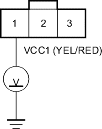
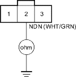
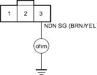

- Turn the ignition switch ON (II).
- Check whether the MIL indicates code for the MAP (manifold absolute pressure) sensor.
Does the MIL indicate code for MAP sensor?
YES - Perform the Troubleshooting Flowchart for the MAP sensor (see page 11-59). Recheck for DTC 35 after troubleshooting. 
NO - Go to step 3.
- Turn the ignition switch OFF.
- Disconnect CVT driven pulley speed sensor connector.
- Turn the ignition switch ON (II).
- Measure the voltage between CVT driven pulley speed sensor connector terminal No. 1 and body ground.
CVT DRIVEN PULLEY SPEED SENSOR CONNECTOR

Wire side of female terminals
Is there about 5 V?
YES - Go to step 7.
NO - Go to step 13.
- Turn the ignition switch OFF.
- Check for continuity between CVT driven pulley speed sensor connector terminal No. 2 and body ground.
CVT DRIVEN PULLEY SPEED SENSOR CONNECTOR

Wire side of female terminals
Is there continuity?
YES - Repair short to ground in the wire between PCM connector terminal C15 and the CVT driven pulley speed sensor.
NO - Go to step 9.
- Check for continuity between CVT driven pulley speed sensor connector terminal No. 3 and body ground.
CVT DRIVEN PULLEY SPEED SENSOR CONNECTOR

Wire side of female terminals
Is there continuity?
YES - Go to step 10.
NO - Repair loose connector or open in the wire between the CVT driven pulley speed sensor connector terminal No. 3 and ground (G101), or repair poor ground (G101).